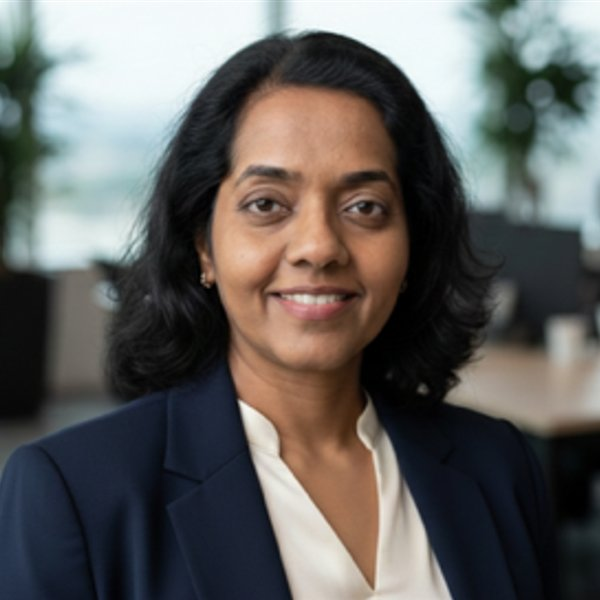
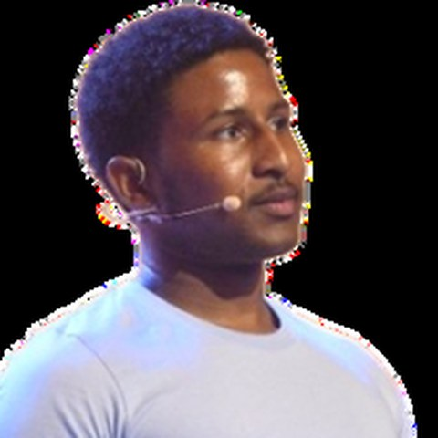
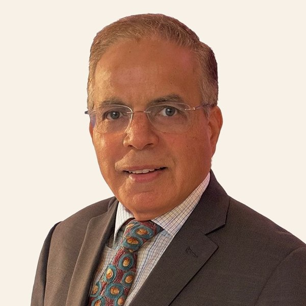
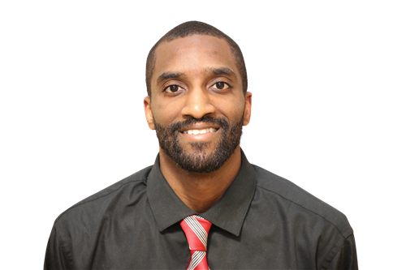
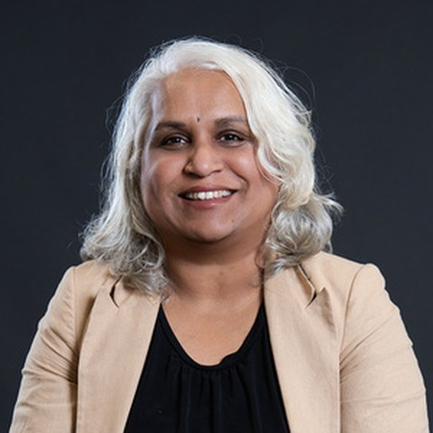

Meet our team
Dedicated experts passionate about transforming menopause care with empathy, science, and innovation.
Core team
The driving force behind Empress Health.

Elizabeth Koshy
Elizabeth Koshy is a serial entrepreneur, health coach, and former General Manager of Nivea Skincare (Beiersdorf) who has spent her career at the intersection of beauty, technology, and wellness. A pioneer in creative outsourcing between Hollywood and India through ventures like JadooWorks and Animation Dimensions, Elizabeth has led global teams, built creative studios, and shaped stories that bridge culture and innovation. Today, she channels that same pioneering spirit into Empress Health.ai and Empress Naturals — her mission-driven ventures transforming how women experience perimenopause and menopause. After a near-death accident left her bedridden for months, Elizabeth's healing journey through Ayurveda and integrative wellness inspired her to create a holistic ecosystem that blends science, self-care, and technology. A frequent speaker at industry events like Shoptalk, eTail, and Groceryshop, Elizabeth advocates for redefining midlife as a time of renewal — not retreat.

Roshni Nambiar
Roshni brings over two decades of experience bridging software engineering, product strategy, analytics and consumer growth leadership to Empress Health. She has a rare background in both building complex marketing technology infrastructure from scratch and managing its performance at the P&L level. Most recently, Roshni led direct-to-consumer (DTC) strategy across a 10-brand premium portfolio at Unilever, driving multi-year sustainable acquisition and retention growth. Previously, she built a high-performing analytics division as part of the leadership team at a marketing agency, guiding data consulting that supported a successful private-equity exit. Roshni holds an MBA from UCLA Anderson and is a recurring industry speaker on first-party data and customer lifecycle strategy.

Carlos Shields-Davis
Carlos Shields-Davis is a Google-backed founder whose work spans AI, VR and spatial computing. His career has moved between spatial computing, AI product development and creative technology, with a consistent focus on turning cutting-edge tools into experiences people can actually use. At Empress Health, he shapes the AI architecture behind the platform — how Empress interprets what a woman tells it, and how that becomes guidance she can act on. Carlos holds an MS from the University of the Arts London and an MBA from Peking University.
Advisory board
Guiding our vision with expertise.

Ripan Nagpal
Ripan Nagpal brings over two decades of experience in cloud technologies, security, and SaaS program management. He has held senior positions at Meta, Twilio, Cisco, Sage Intacct, and Milo Technologies, where he led enterprise rollouts of cloud-native asset management platforms. Ripan's work spans the development of advanced security and network management systems that have supported Fortune 500 enterprises globally. He holds an MBA from the University of Michigan, Ann Arbor.

Norvell Robinson
Norvell Robinson is a computer scientist, AI developer and entrepreneur focused on building intelligent, human-centered technology. A Wayne State University graduate in Computer Science, he has designed neural networks, chat systems and adaptive wellness platforms that personalize experiences through data and empathy. He advises Empress Health on machine learning, natural language processing and wellness analytics — the work behind AI that supports women through their hormonal health journey.

Dr PoornaKala Sethuramaan
Dr PoornaKala Sethuramaan has spent more than twenty years building technical solutions where data science meets product strategy. She served as Vice President, Data Science and Product Strategist at Bank of America, and has led data science and AI strategy at VP level. Her executive education includes MIT's Building AI Products and Services for Organizational Transformation, Kellogg's Automation, AI and Digital Marketing programme, and the Chief Data and AI Officer programme at the University of Michigan. At Empress Health, she advises on data science and AI architecture.

Dr. Shashank
Post-Doctoral Fellow and Research Scientist at Stanford University School of Medicine, specializing in exosome therapy and regenerative medicine. His research focuses on mesenchymal stem cell-derived extracellular vesicles and their therapeutic applications in age-related diseases.
The experts behind the guidance
Specialists who shape what Empress recommends and when it points you to a clinician.
 Dr. Barry Breaux
Dr. Barry Breaux Dr. Tikku George
Dr. Tikku George Dr. Binumol Skaria
Dr. Binumol Skaria LaVaughn Seepersad-FaysonWomen's Health
LinkedIn ↗ profile for LaVaughn Seepersad-Fayson, opens in a new tab
LaVaughn Seepersad-FaysonWomen's Health
LinkedIn ↗ profile for LaVaughn Seepersad-Fayson, opens in a new tab Dr. Stephen BizalD.C. · Functional & Integrative Health
LinkedIn ↗ profile for Dr. Stephen Bizal, opens in a new tab
Dr. Stephen BizalD.C. · Functional & Integrative Health
LinkedIn ↗ profile for Dr. Stephen Bizal, opens in a new tabOur experts and advisors inform Empress's content and product. Empress Health does not diagnose conditions, prescribe medication or replace care from your own clinician.